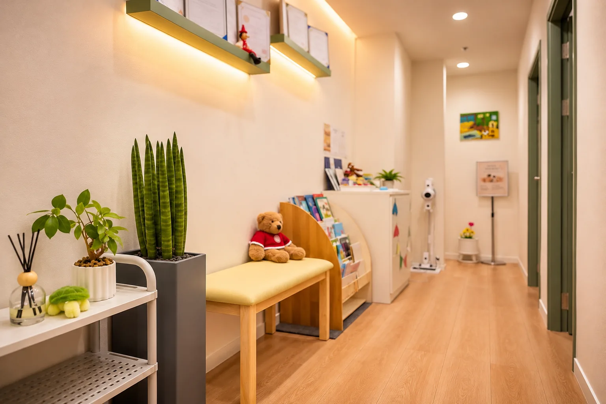

이용안내
처음 오시는 분께
예약부터 상담이 끝날 때까지, 궁금하실 내용을 모았습니다
상담은 이렇게 진행됩니다
내담자 한 분 한 분의 상황과 속도를 존중하며 아래 흐름으로 진행합니다.
상담 예약
네이버 예약이나 문자 · 전화로 예약합니다. 원하시는 요일과 시간, 상담을 고민하게 된 이유를 간단히 알려 주시면 안내해 드립니다.
초기 상담
지금 겪고 있는 어려움과 마음 상태를 함께 이야기합니다. 상담이 어떤 방향으로 진행되면 좋을지, 지금 상황에 상담이 알맞은지 함께 정리합니다.
상담 진행
목표와 필요에 맞춰 상담을 이어 갑니다. 자신을 이해하고 감정을 정리하며 삶의 변화를 차분히 만들어 가는 과정으로, 속도와 방식은 상황에 따라 조정합니다.
상담 종결
상담 목표가 충분히 정리되었거나 한 단계 마무리되었다고 느껴질 때 종결합니다. 종결 시점과 이후의 방향도 충분히 상의해 결정합니다.
모든 상담은 사전 예약으로 진행합니다
한 분 한 분의 상황에 맞는 상담을 위해 충분한 준비 시간을 두고 예약을 받습니다.
네이버 예약
원하시는 상담 종류와 시간을 바로 고르실 수 있습니다. 밤에도 예약하실 수 있고, 첫 상담 20% 할인이 적용됩니다.
네이버로 예약하기 문자010-6793-4899
상담 중에는 통화가 어렵습니다. 문자를 남겨 주시면 확인하는 대로 차례로 연락드립니다. 부재중이어도 반드시 답변드립니다.
문자 보내기 톡톡네이버 톡톡
글로 편하게 물어보고 싶으실 때 이용해 주세요. 상담 가능 시간과 진행 방법을 안내해 드립니다.
톡톡으로 문의하기상담 시간
- 월 – 금
- 10:00 – 22:00
- 토요일
- 10:00 – 19:00
- 일요일
- 둘째 · 넷째 주 상담
평일 저녁과 토요일에도 상담합니다. 학교와 학원, 직장 때문에 평일 낮 시간이 어려운 분도 편하게 예약해 주세요.
비용 때문에 망설이지 않으시도록
상담 비용
- 아동 상담 (1회 50분)
- 60,000원
- TCI 기질 · 성격검사 + 해석 상담
- 39,000원
- 성인 · 부부 상담
- 문의
지역화폐(카드형 · 지류형) · 제로페이 · 간편결제를 쓰실 수 있습니다. 자세한 비용은 예약 때 안내해 드립니다.
상담비 지원제도
상담이 필요하지만 비용 부담으로 시작이나 지속이 어려운 가정을 위해 센터가 직접 지원합니다.
- 특별지원 — 수급 · 차상위 · 한부모 · 조손가정30%
- 일반지원 — 기준 중위소득 120% 이하 가정20%
아동 상담 60,000원 기준 30% 지원 시 42,000원, 20% 지원 시 48,000원입니다(성인은 별도 문의). 정부 · 지자체 바우처가 아닌 센터 자체 제도입니다.
지원 신청 방법
- 문의지원제도 상담
- 가구원 수 확인가족 구성 확인
- 증빙서류 제출해당 서류 1가지
- 지원 대상 확인확인 후 안내
- 상담 진행지원 금액으로 진행
제출 서류
- 일반지원(20%) 건강보험료 납부확인서(최근 1개월분)
- 특별지원(30%) 수급자증명서, 차상위계층확인서, 한부모가족증명서, 조손가정 확인서 등 해당 서류 1가지
- 모든 서류는 최근 1개월 이내 발급분
상담을 시작하기 전에 궁금한 것들
상담은 몇 번 정도 받아야 하나요?
사람마다 다릅니다. 초기 몇 회기는 어려움을 이해하고 상담사와 신뢰를 쌓으며 목표를 구체화하는 과정일 수 있습니다. 그래서 3~5회기에 뚜렷한 변화가 느껴지지 않는다고 해서 효과가 없다고 단정하기는 어렵습니다. 진행하면서 목표와 과정을 함께 점검하고, 필요하면 종결이나 다른 지원 방향도 상의합니다.
꼭 진단을 받았을 때만 상담을 받나요?
아닙니다. 상담은 특정 진단을 받았을 때만 필요한 과정이 아닙니다. 일상에서 반복되는 어려움이나 마음의 부담이 있을 때, 그 상태를 함께 이해하고 정리해 보는 시간이 될 수 있습니다.
아이가 상담실에서 아무 말도 안 하면 어떡하죠?
괜찮습니다. 상담의 시작부터 모든 마음을 말로 설명해야 하는 것은 아닙니다. 놀이 · 그림 · 모래상자처럼 말이 아닌 방법으로 표현할 수 있고, 그 경험이 상담에 참여하는 데 도움이 됩니다.
아이 상담을 하면 부모 상담도 하나요?
네. 아동 · 청소년 상담에서는 필요에 따라 부모 상담을 함께 진행합니다. 아동 상담은 4회기를 진행한 뒤 정기적인 부모 상담을 따로 갖고, 아이의 어려움뿐 아니라 가족 관계와 환경까지 함께 살펴봅니다.
상담 내용은 비밀이 지켜지나요?
모든 상담은 사전 예약제로 운영하며, 상담 내용의 비밀보장을 중요하게 생각합니다. 다만 본인이나 다른 사람의 안전이 위험한 경우, 아동학대처럼 법으로 신고가 정해진 경우에는 예외가 될 수 있으며, 이 내용은 상담을 시작할 때 다시 안내해 드립니다.
직접 가기 어려운데 비대면으로도 되나요?
청소년과 성인은 전화 또는 화상(Zoom) 상담을 받으실 수 있습니다. 주변의 방해를 받지 않는 공간과 안정적인 인터넷 연결을 준비해 주세요. 긴급한 정신건강 지원이 필요한 경우에는 가까운 의료기관이나 위기지원 서비스의 도움이 우선입니다.
주차할 수 있나요?
벽산종합상가 지하 주차장을 무료로 이용하실 수 있습니다. 벽산아파트 정문으로 들어와 108동 쪽으로 직진한 뒤 왼쪽 지하 주차장으로 내려오세요.
예약 시간을 바꾸고 싶어요.
예약 변경이 필요하시면 미리 문자(010-6793-4899)로 알려 주세요. 확인하는 대로 가능한 시간을 안내해 드립니다.